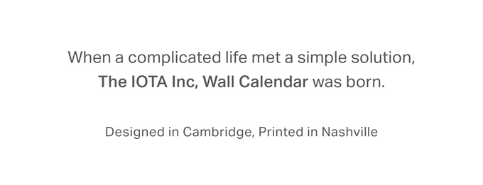
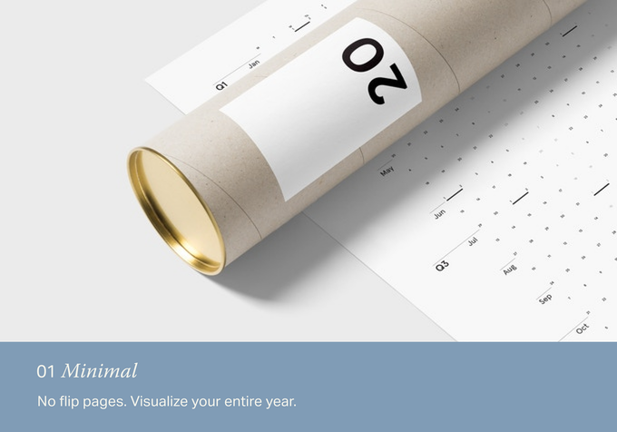
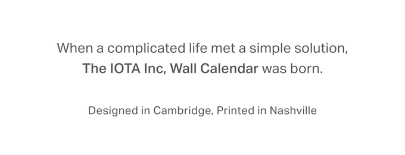
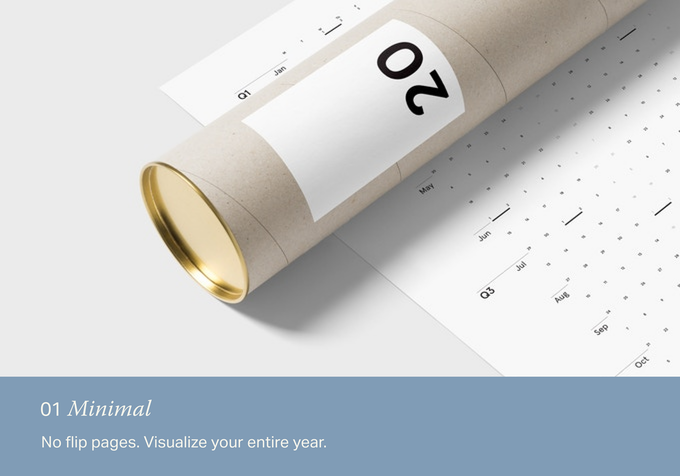
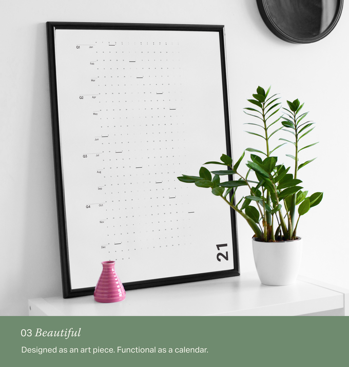
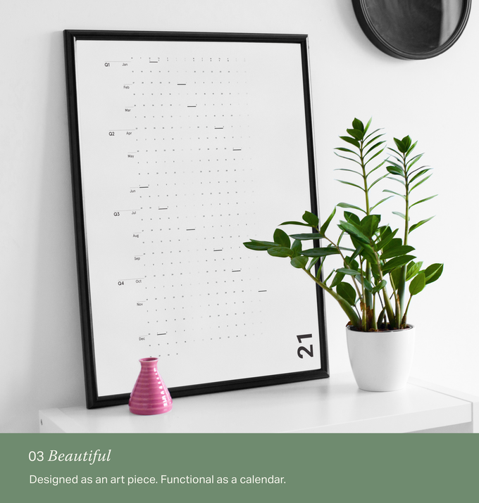
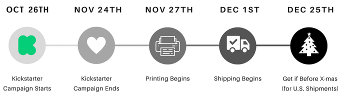

Project we Love Product Design Cambridge, MA
Story
Hi there! We're IOTA Inc.
We’ve re-designed the calendar to simplify your life. After two previously successful calendar Kickstarters, we’re back with our 2021 version - now made to be as forgiving as a whiteboard, yet as beautiful as an art piece.
To preorder and make it a reality, click FBack This Project! Press Kit
 



 

Use it However You'd Like
Plan vacations, birthdays, or anniversaries. Make a colored Gantt chart. Start bullet journaling. Count the days as they pass. This calendar provides just enough structure without getting in the way.
Funny thing is, it looks so nice, that you might just want to leave it alone.

Testimonials from 2019 and 2020
I'm a writer working on my first novel and the Minimalist calendar has been PERFECT for me. I love that it reflects the fluidity and non-stop reality of time and shows me in one view the entire year, past and present.
–Laura, Portland OregonWe got a lot of use as a family calendar keeping us on the same page… Now I’m hooked!
–Jesse, Denver ColoradoYour calendar has had a pretty significant effect on my life. By forcing myself to realize that time is passing, and questioning how important the thing that I'm spending my hours on, I think I've truly been living a more fulfilling life
–Phil, New York City
Timeline
Made by People Who Care
Carefully designed in Cambridge, and printed with love in Nashville. The people who’ve touched this product have had a love for minimal, yet high-quality design.
- Nick, the original calendar designer, has spent two years refining the design.
- Our printer has been operating for over 30+ years. You could say that they are world-class at what they do.
Risks and Challenges
Having done this project two previous times (check out Nick's profile under the bios to take a look at them), it's hard to see any specific problems that might arise. We have a relationship with our printer whom we trust in Nashville. We've partnered with a fulfillment center not too far away to ensure that we can get the product to you on time. We are fairly confident that we can get the calendar into U.S. households before Christmas.
Learn about accountability on Kickstarter
Environmental Commitments
Visit our Environmental Resources Centerto learn how kickstarter encourages sustainable practices.
Long-lasting design
We've changed the calendar materials this year so that it acts as a dry-erase whiteboard. No more making a mistake and feeling to need to throw out the entire thing!
Questions about this project? Check out the FAQ